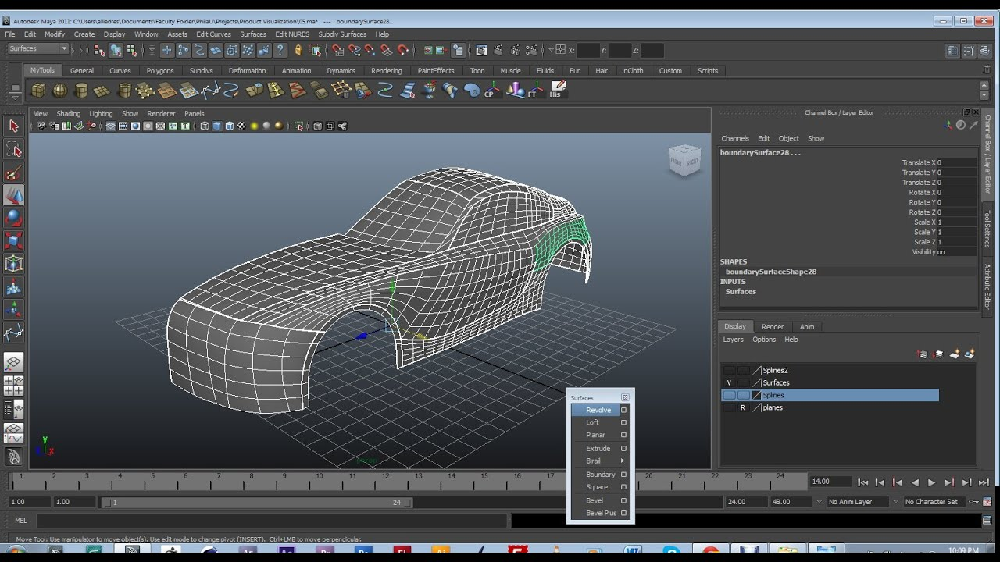
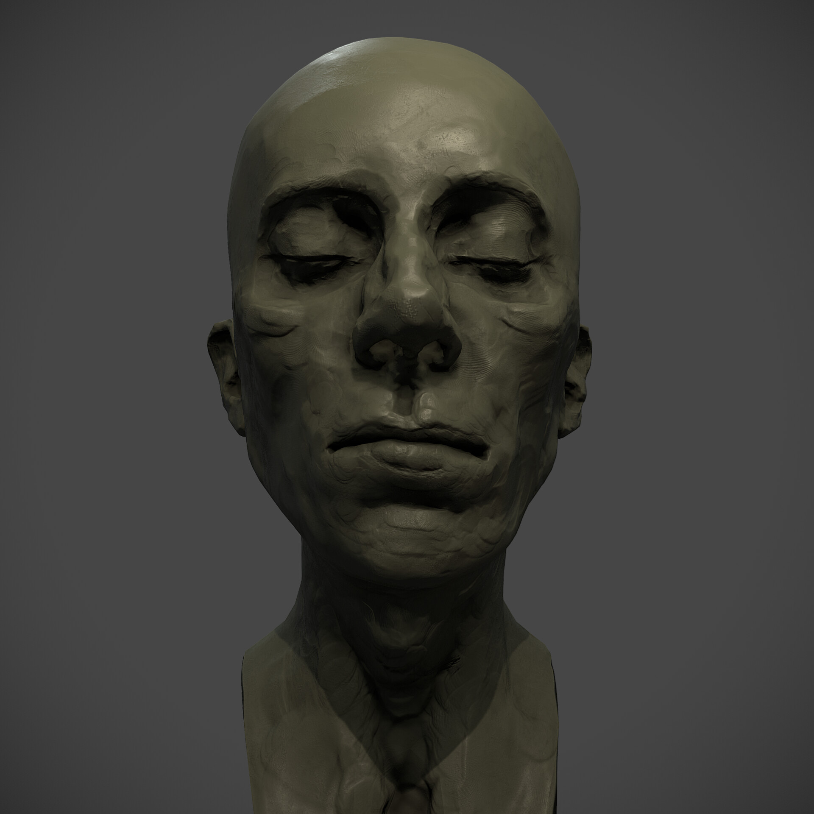

Полігональне моделювання: універсальний стандарт

Полігональне моделювання — найпоширеніший вид 3D-моделювання, який використовує полігони (трикутники або чотирикутники) для створення об’єктів. Уяви, що ти складаєш модель із маленьких пазлів: кожен полігон — це шматочок, який формує поверхню. Цей метод ідеальний для ігор і анімації, адже дозволяє створювати деталізовані моделі, як персонажі у *The Witcher 3* чи машини у *Forza Horizon*.
У полігональному моделюванні ти маніпулюєш вершинами, ребрами і гранями, щоб формувати об’єкти. Наприклад, модель дракона може мати 100 000 полігонів для детальних лусочок, але для мобільних ігор кількість зменшують до 5 000, щоб зберегти продуктивність. У 2025 році інструменти, як Blender чи 3ds Max, роблять цей процес доступним: ти можеш створити меч чи будинок за кілька годин.
Спробуй почати з простого: змоделюй у Blender куб, а потім перетвори його на космічний корабель. Полігональне моделювання — це твій перший крок до створення ігрових світів!
NURBS-моделювання: гладкість і точність

NURBS-моделювання (Non-Uniform Rational B-Splines) використовує математичні криві для створення гладких і точних поверхонь. На відміну від полігонів, NURBS ідеально підходять для інженерних і промислових дизайнів, як-от автомобілі чи архітектурні проєкти. Уяви кузов машини в *Gran Turismo* або вигнуті форми хмарочоса — це часто робота NURBS.
NURBS-моделі складаються з кривих, які контролюються точками. Наприклад, у 2024 році Tesla використовувала NURBS для моделювання кузова Cybertruck, щоб кожна лінія була ідеально гладкою. Програми, як Autodesk Maya чи Rhino, спеціалізуються на цьому методі. Однак NURBS менш популярні в іграх через складність перетворення в полігони.
Для новачка NURBS може бути складним, але спробуй у Maya створити пляшку чи вазу. Цей метод навчить тебе створювати елегантні форми для реального світу!
Скульптинг: мистецтво цифрової глини

Скульптинг — це як ліплення з глини, але в цифровому форматі. Ти використовуєш віртуальні пензлі, щоб формувати моделі з мільйонами полігонів, створюючи наддеталізовані об’єкти, як персонажі чи монстри. Уяви створення Кратоса із *God of War* із кожною зморшкою на обличчі — це робота скульптингу.
Програми, як ZBrush чи Blender, дозволяють "ліпити" моделі, додаючи деталі, як шкіра чи луска. У 2025 році скульптинг став ключовим для кіно і ігор: наприклад, дракони у *House of the Dragon* були створені через скульптинг. Після цього моделі часто спрощують для використання в іграх, зберігаючи деталі через карти нормалей.
Спробуй ZBrush або скульптинг у Blender: почни з кулі та сформуй обличчя персонажа. Це найкреативніший вид моделювання, який відкриває двері до мистецтва!
Дізнайся про відеоуроки